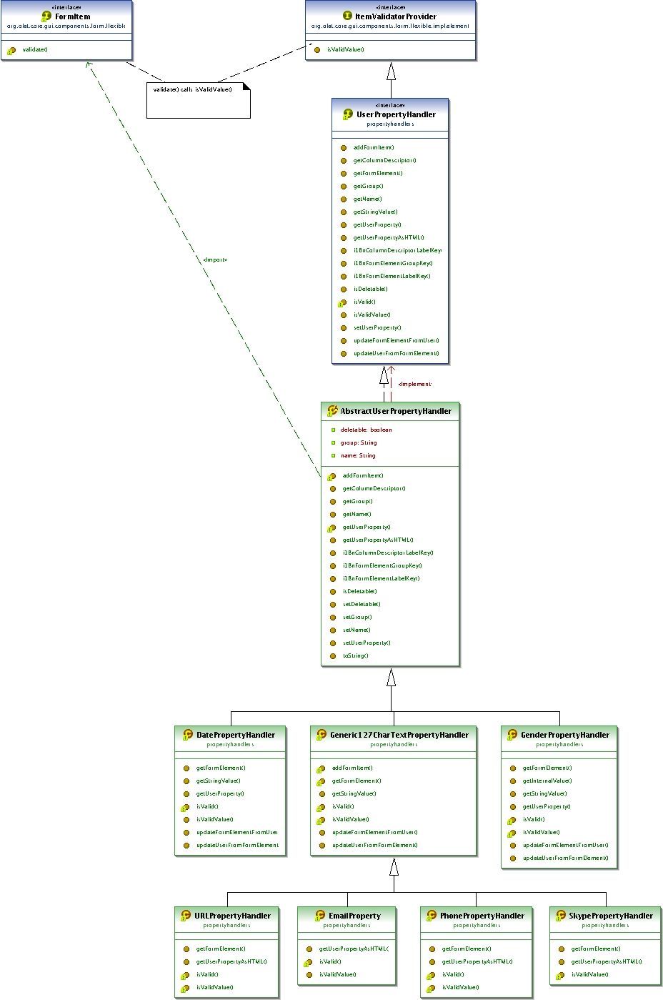

These package deals with user settings. Such things the user can change himself like password, language settings and his profile information.
The files like Address.java or Preferences.java are the interfaces the *.Impl.java files implement the interfaces.
The *Controller.java files take the action from the requests and match it with an velocity file to render the content. The variables in the controller files you will find also in the *.html files witch get rendered trough the velocity rendering engine.
The structure of the olat source tree you will find as well in the folder webapp/content/olat.
These structure holds the velocity files *.html.
For Example for the controller file:
org.olat.user.ChangePrefsController.java
The properties files are used for internationalisation. The translated elements get the content for each language out of these files.
An inheritance tree can be found in 